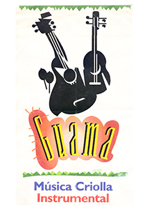

(05/2002 - 04/2004)
San Antonio de los Altos, Venezuela
Folklore venezolano experimental con instrumentos
tradicionales amplificados

Integrantes:
Emilio
Mendoza
Bandola
Eléctrica (Gordation)/Guitarra nylon
Elías
Torres
Cuatro
Eléctrico (Gordation)
Gerardo
Osal
Guitarra/Tres amplificados
Principales
Presentaciones
• Programa de Televisión "Creadores" para Vive TV, Caracas.
• Fiestas varias en San Antonio de los Altos
• Celebración en San Francisco de Yare de los Diablos Danzantes,
2003.